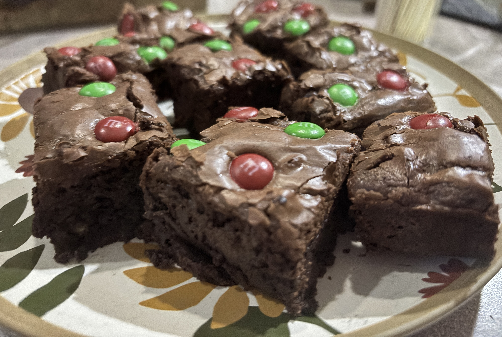
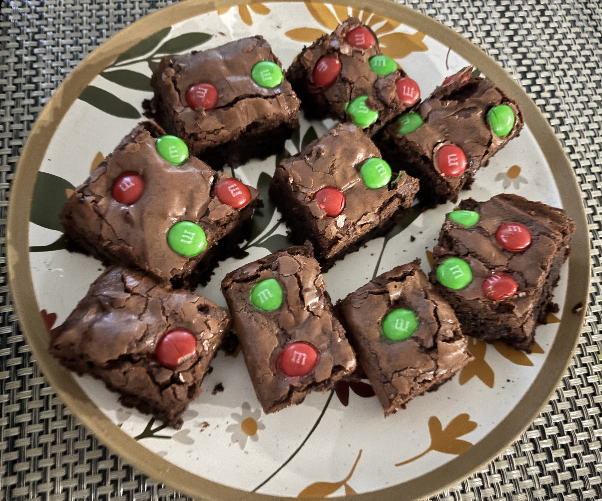

My Favourite Brownies
I’ve tested nearly every brownie recipe I’ve come across, but I always find that they’re
either too fudgy, making the texture very dense, or too dry and not fudgy enough.
After several experiments and making small tweaks to each recipe, this is my version,
which has that rich fudginess while still keeping the right texture.
← Back to Baking



Ingredients
- 10 tbsp melted butter (1/2 cup + 2 tbsp)
-
1 cup coconut sugar (this is a healthier option, but granulated sugar works too)
- 2 eggs
- 2 tbsp vanilla extract
- ¾ cup all-purpose flour, sifted
-
½ cup melted chocolate (milk, dark, or semi-sweet, this is the key for fudginess!)
- ¼ cup cocoa powder, sifted
- ½ tbsp salt
- 1 cup chocolate chunks or chips (I used semi-sweet)
Instructions
- Preheat oven to 350°F (≈175°C). Prepare a baking pan.
-
Whisk melted butter and sugar until light and fluffy (aabout 3-4 minutes).
A hand mixer works, but a bowl and whisk are enough.
- Mix in the eggs, then the vanilla extract.
-
Switch to a spoon and stir in the melted chocolate.
-
Using a spatula, gently fold in the flour, cocoa powder, and salt
one at a time.
- Fold in the chocolate chunks or chips.
- Pour batter into the prepared pan.
-
Optional: add toppings of your choice.
In the photo I used Christmas M&Ms.
-
Bake for 25–28 minutes, until a toothpick comes out slightly dirty.
To avoid overbaking, I turn the oven off at 25 minutes and let them sit inside
for another 5 minutes, adjust based on your oven!!